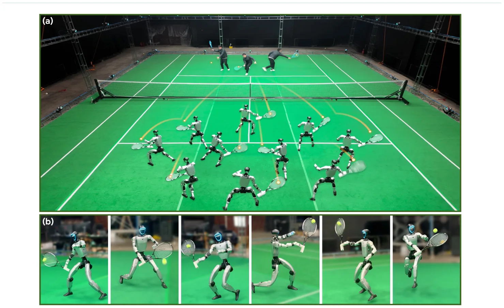
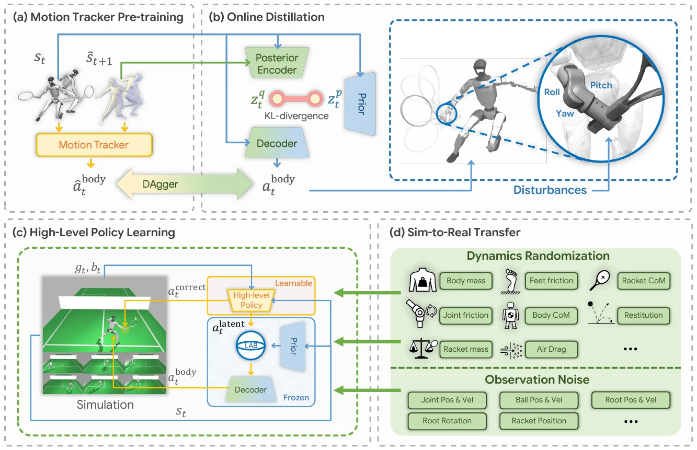
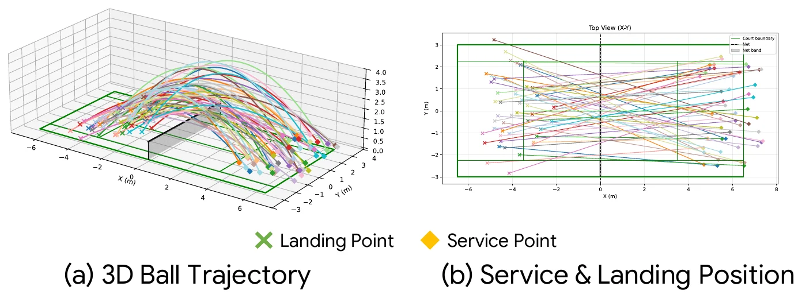
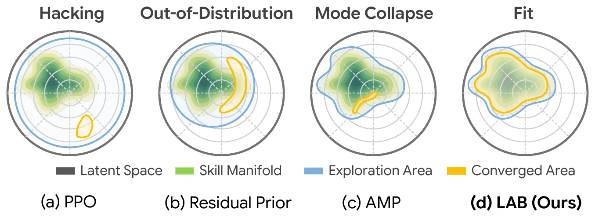
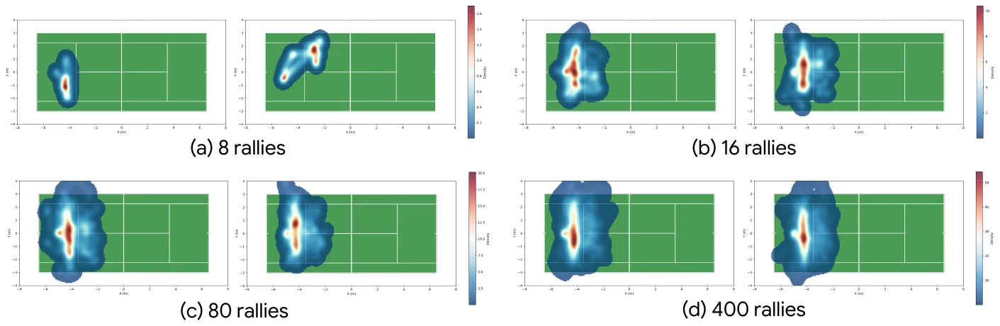
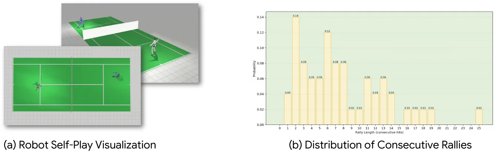
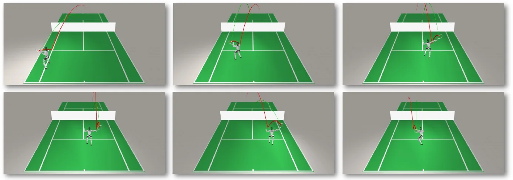
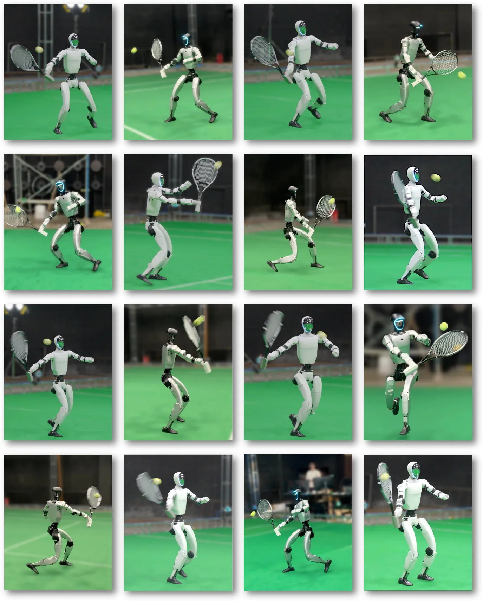

arXiv 2603.12686v1 · cs.RO · 2026 年 3 月 13 日 · SuperMimic 引作 IROS 2026 · 中文精读
Learning Athletic Humanoid Tennis Skills from Imperfect Human Motion Data
作者 Zhikai Zhang、Haofei Lu、Yunrui Lian（共同一作）、Ziqing Chen、Yun Liu、Chenghuai Lin、Han Xue、Zicheng Zeng、Zekun Qi、Shaolin Zheng、Qing Luan、Jingbo Wang、Junliang Xing、He Wang、Li Yi（通讯作者），来自清华大学、北京大学、银河通用（Galbot）、上海期智研究院和上海人工智能实验室。
关于这份精读。我读的是 arXiv v1（2026 年 3 月 13 日，目前唯一的版本）。arXiv 摘要页登记的许可是 CC BY 4.0。我逐页看了 PDF：没有页脚版权声明，第 1 页只有 Galbot 的标志，和登记的许可没有矛盾。这里按原文顺序覆盖正文六节和附录 A、B，小节编号和原文一致，用自己的话整理，不是逐字翻译。公式按原文编号，表格数字照录原文。
图 1 到图 8 从 arXiv PDF 裁切，作者 Zhang et al.，CC BY 4.0，只做了裁切和格式转换（约 1400 px 宽的 webp），没有改内容。图下的文字是我写的。注意 arXiv 的 HTML 版漏掉了 PDF 的图 1，所以它的图号比 PDF 小 1（HTML 的图 1 是 PDF 的图 2）；本页按 PDF 编号，“看原图”链接已对应到 HTML 里的正确位置。标成“读者注”的框是我核算或对照的内容，不属于论文，页尾有汇总。
代码。官方仓库 GalaxyGeneralRobotics/LATENT。我读的是当时最新的提交 a931da5（2026-04-30），只读，没有运行，也没有下载动作数据。仓库根目录没有 LICENSE 文件，GitHub 也识别不出许可，所以默认是保留所有权利；部分文件头带 DeepMind 的 Apache 2.0 声明（来自 MuJoCo Playground），G1 模型文件带宇树的 BSD 3-Clause 声明。我只在本页引用了少量配置数值，没有复制代码。仓库目前只放出了第一阶段（动作跟踪器），蒸馏和高层策略都还在 README 的待办里，所以代码只能对照 §3.2.1 和一部分随机化。
网球要求人跑过半个场地、对 15 到 30 m/s 的来球做出反应、在几毫秒的触球时间里打准。这样的动作没法靠遥操作收集机器人数据，完整的人类比赛动捕也很难拿到。
这篇论文换了个思路：只采动作片段。请 5 位业余球员在 3 m × 5 m 的动捕区里做正手、反手、侧滑步、交叉步之类的基本动作，共 5 小时，不剪辑不标注。这些数据有两处“不完美”：手腕动作不准（不精确），也没有“什么时候用哪个动作”的信息（不完整）。系统叫 LATENT，分三步：
读完我认为最值得记住的三点：(1) 两个设计都针对数据的缺陷——手腕交给高层直接控制，技能的组合交给 RL，但用先验的方差把 RL 圈住；(2) 消融里 LAB 主要改善的是动作质量（关节力矩低 46% 到 79%），成功率只差 1.6 到 5.1 个点；(3) 论文的数字有几处要小心读：仿真里的球场其实是按比例缩小的 13 m × 6 m（读者注 9），表 3 的四列不可能来自同一批试验的两种划分（读者注 14），真机每组只有 9 到 11 次（读者注 17）。

名字。摘要里写的是 “a system that Learns Athletic humanoid TEnnis skills from imperfect human motioN daTa”，粗体字母拼成 LATENT。它同时暗指方法的核心是潜（latent）动作空间。SuperMimic 表 1 里的 “LATENT [10]” 就是这个名字，参考文献 [10] 的作者、标题和 arXiv 号都和本文一致。
会议。arXiv 页面没有 Comments 和 Journal-ref，PDF 里没有会议名，项目主页也没写。“IROS 2026” 只来自 SuperMimic 的参考文献 [10]，我没有找到其他来源，所以标为未核实。顺带一提，项目主页源码里有一段被注释掉的 “Conference on Robot Learning 2024 / Spotlight WCBM Workshop” 字样，是网页模板的残留，页面上不显示，和本文无关。
我读了 SuperMimic 全文，它提到 LATENT 只有两处，都在“可复用的动作表示与下游控制”这一类：
除此之外 SuperMimic 没有用到 LATENT 的公式、网络、数据或评测。所以从原文看，SuperMimic 没有从 LATENT 拿任何技术，只是把它当成“分阶段训练、下游用任务奖励、能上真机”这一格的代表。两篇论文的问题也不同：LATENT 要解决的是数据不完美，SuperMimic 要解决的是跟踪训练的算力。
| 表 1 的格 | 结果 | 本文依据 |
|---|---|---|
| 模仿：PPO | 对得上 | §3 “用 PPO 作强化学习框架”；跟踪器沿用 Any2Track。代码（a931da5）的 train_tracking.py 是 Brax 的 PPO |
| 潜变量：DAgger | 对得上 | §3.2.2 式 (2) 明说是 DAgger [25] 的监督损失，学生自己滚出数据、老师标动作 |
| 下游：PPO | 对得上 | §3 说整套用 PPO；§3.3 高层策略用 RL 训练。论文没有逐阶段单独写“PPO”，这是从 §3 的总述推出来的 |
| 任务信号：RL | 对得上 | 高层的奖励是表 1 的网球任务项（接近球、击中、落点、过网等），不是跟踪参考动作 |
| 真机 ✓ | 对得上 | §4.3、§5.3、表 5：Unitree G1 与人对打 |
| 三格不合并（依次训练、冻结前一阶段） | 基本对得上 | 图 2(c) 把先验和解码器标为 Frozen，高层是唯一可学的部分。跟踪器在蒸馏时作老师，论文没写“冻结”二字，但 DAgger 的老师按定义是固定的 |
| 表 1 没体现的 | 补充 | 高层的动作是混合的：潜动作 \(a^{\rm latent}\) 之外还直接输出右手腕的关节指令 \(a^{\rm correct}\)，绕过潜空间（§3.3.2）。表 1 的“下游”一栏看不出这一点，但它对结果影响最大（表 4 去掉后正手成功率掉 14 个点） |
结论：表 1 的这一行是准确的。另外，SuperMimic 正文里 “PULSE 和 LATENT 用学到的动作表示做下游强化学习” 这句话也准确。代码目前只放出了第一阶段，后两格只能对照论文，不能对照代码。
下表是我从两篇论文各自读出来的对比，不是 SuperMimic 作者的说法。
| LATENT | SuperMimic | |
|---|---|---|
| 目标 | 一个具体任务：网球回球 | 通用的全身动作跟踪器，再接下游接口 |
| 数据 | 自采 5 小时网球动作片段（只公开了很小一部分） | BONES-SEED 264.56 小时 |
| 跟踪器怎样训 | PPO，仿真里 rollout | 穿过学到的世界模型做 BPTT |
| 潜空间 | DAgger 蒸馏，条件先验的变分瓶颈 | 多编码器共享 32 维 tanh 潜变量，和跟踪器联合训练 |
| 下游 | PPO + 任务奖励，潜动作被 LAB 限制，另加手腕直控 | 蒸馏，或在世界模型里按接口奖励训练 |
| 仿真器 | MuJoCo（MJX），8 张 GPU | MuJoCo Warp，1 张 H100 |
| 真机 | G1 + 球拍，靠动捕拿全局状态和球的位置 | G1，本体观测 |
两者在结构上都属于“先学跟踪、再学可复用的表示、再接下游”这一家族，其他相关页：PHC（PULSE 的前身跟踪器）、SONIC、DeepMimic、ControlVAE、MoConVQ。
问题。运动项目要求动作快、反应快、精度高。以网球为例：冲刺速度超过 6 m/s，来球 15 到 30 m/s，球拍触球只有几毫秒。人通过遥操作根本做不出这样的机器人示范，所以没法直接做模仿学习。
用人体动作当参考也难。网球的动作覆盖半个场地、要连续多拍、触球时手腕动作又细又准，从真实比赛里动捕完整而精确的人-球动作极难。Vid2Player3D 改用转播视频，但要一整条流水线：检测球员、估相机、2D 和 3D 姿态估计，最后模仿时还要在根部加外力修正伪影，工程量很大。
LATENT 的做法。只采基本技能的动作片段（正手、反手、侧滑步、交叉步等），不采完整比赛。“不完美”指两点：❶ 不精确，动捕难度加上人和机器人身体结构的差异，挥拍时的手腕动作不准；❷ 不完整，片段只告诉你自然的动作长什么样，不告诉你怎样用它们回球。作者的判断是：这种“准真实”的数据仍然提供了足够的技能先验，加以修正和组合就能学会网球，同时保持像人的动作。
两个设计，都建立在“潜动作空间 + 高层策略”的分层框架上：
再加上对机器人和球都做动力学随机化和观测噪声，部署到 Unitree G1，能和人稳定地多拍对打。
四项贡献：提出 LATENT 系统；提出构造和使用潜动作空间的两个新设计；真机部署并能和人多拍对打；在仿真和真机上做了大量实验验证主要设计。
人形自由度高，从零学技能样本效率低、动作也不自然。常见办法是先从人体动作数据学一个编码可复用技能的潜动作空间，再训练高层策略在里面采样。路线有两条：一类（Vid2Player3D、InsActor）学运动学动作的潜空间，再交给预训练的跟踪器执行，问题是生成的运动学动作经常物理上不可行，跟踪器吃不消；另一类直接学关节动作的潜空间，包括 ControlVAE、MoConVQ、CALM、ASE 等。PULSE 从通用跟踪器蒸馏出 VAE 式的潜动作空间；R²S²（作者组的前作）把这个思路搬到真机，从一组预训练的基本技能学潜空间，做移动操作。本文的区别是数据只含不精确、不完整的基本技能，需要修正和组合。
在角色动画里，网球（Vid2Player3D）、篮球（SkillMimic 等）、足球（PhysicsFC）都有工作。最接近的是 Vid2Player3D：仿真角色能用多种击球把球打到目标点，但它依赖无限关节力矩、根部残差力等物理上不可行的假设，也没考虑仿真到真机的差距。真机方面，已有乒乓球、羽毛球、足球、拳击等工作，但作者认为它们往往缺少高动态动作、灵活的全身协调或快速反应。
总体分三段（图 2）：§3.1 用一个紧凑的动捕系统采不完美的人体动作数据；§3.2 用这些数据构造可修正的潜动作空间；§3.3 训练高层策略修正并组合潜空间里的技能来打网球。整套用 PPO 训练，用 MuJoCo 的 JAX 版本（MJX，MuJoCo Playground）仿真，8 张 GPU 并行。高层规划器和低层控制器都是 50 Hz，仿真频率设为 2000 Hz，以便准确模拟球与球拍、球与地面的接触。

从真实比赛采集完整的人-球动作又难又贵：场地大、要多拍、精度要求高。但只采网球里用到的基本技能就容易得多。作者请了 5 位业余球员，在光学动捕系统里做正手、反手、侧滑步、交叉步等动作。因为只采片段，动捕的要求低得多：有效区域只有 3 m × 5 m，论文说比标准网球场小 17 倍以上，场地和相机数都省了很多。
总共采了 5 小时，不做任何剪辑或标注。采完后用 LocoMuJoCo 把人体动作重定向到人形机器人。
标准双打场 23.77 m × 10.97 m = 260.8 m²，除以 3 × 5 = 15 m² 得 17.4，和“17× 以上”一致；按单打场（8.23 m 宽）算只有 13.0 倍。所以作者是拿双打场比的。
不过省下的只是采数据的场地。代码 README 的“真机部署”一节写着：实验场地由第三方动捕服务商提供，50 多台 2048 × 2048、120 Hz 的相机，动捕区 19 m × 15 m（285 m²，是采集区的 19 倍），租了约 3 周，花费约 35 万元人民币。部署时机器人和球的全局状态都靠这套动捕（§4.3）。论文正文没有这些数字。
先训练一个跟踪器模仿采来的数据，再把它蒸馏成带变分信息瓶颈的潜变量模型。
为了把带噪的人形动作变成机器人能执行的基本技能，训练一个跟踪器，框架沿用 Any2Track（作者组的前作）。它是一个 RL 策略 \(\pi_{\rm tracker}(\hat a^{\rm body}_t\mid s_t,\tilde s_{t+1})\)：输入当前状态 \(s_t\)（角速度、投影重力、各关节位置和速度、上一帧动作）和数据里的下一帧目标 \(\tilde s_{t+1}\)，输出关节动作，交给 PD 控制器算出力矩。目标是 \(t+1\) 时刻的状态尽量接近 \(\tilde s_{t+1}\)，同时保持平衡和安全。
手腕的处理。数据里击球时的手腕动作本来就不准，重定向又放大了误差，所以后面要让高层策略修正手腕。为了让跟踪器在这种修正下仍然稳定，训练时去掉 \(\hat a^{\rm body}_t\) 里右手腕（持拍手）的控制信号，并对右手腕关节施加额外的随机扰动。跟踪器要在手腕被未知扰动的情况下模仿其余关节。
代码（a931da5，g1_env_tracking_tennis.py）和论文能对上的：控制周期 ctrl_dt = 0.02（50 Hz）；策略观测是目标差（关节位置、速度之差）、投影重力、角速度、关节位置、速度、上一帧电机目标，和论文列的一致。
论文没写、代码里有的：
action_scale = 1.0）。论文只说“输出关节动作交给 PD”。sim_dt = 0.002，即 500 Hz，不是正文说的 2000 Hz。正文说 2000 Hz 是为了球的接触，而跟踪器环境里没有球（模型文件名就是 racket_wo_ball），所以这不一定矛盾，只说明 2000 Hz 指的是有球的高层训练。README 说跟踪器基于 OpenTrack，那是 Any2Track 的开源实现。
论文只说“随机扰动”。代码里被排除的是右手腕 roll、pitch、yaw 三个关节：它们从策略的动作里去掉（29 维变成 26 维），对应的三个连杆也从跟踪奖励里去掉。每隔 0.5 到 2.0 秒，给这三个关节重新抽一个 PD 目标，在整个关节行程内均匀采样。也就是说扰动不是小噪声，而是让手腕在全行程里乱摆，比高层将来可能给的修正大得多。
常量文件里这几行的注释写着“这些关节将直接跟踪参考动作”，但环境代码在 enable_random_targets = True（默认）时会用随机目标覆盖它们。注释和默认行为不一致，我按代码读。
学会模仿以后，跟踪器已经包含打网球需要的基本技能。为了得到紧凑、有结构的技能表示，用在线蒸馏训练一个带潜变量的学生网络（做法同 PULSE、R²S² 和作者的另一篇 [17]）。学生是编码器-解码器结构，带条件变分信息瓶颈，把技能编码进连续空间：
训练时编码 \((s_t,\tilde s_{t+1})\)，采样 \(z^q_t\sim\mathcal N(\mu^e,\sigma^e)\)，解码得到 \(a^{\rm body}_t\)，去重建老师（跟踪器）的动作 \(\hat a^{\rm body}_t\)，同时让潜分布靠近先验。总损失：
式 (2) 是 DAgger 的监督损失。\(\mathcal D_{\rm agg}\) 是缓存，存的是学生自己滚出来的状态和老师在这些状态上给的动作。前面说过，\(\hat a^{\rm body}_t\) 和 \(a^{\rm body}_t\) 都不含右手腕；蒸馏时继续扰动右手腕，让潜空间也对这种扰动鲁棒。
可学习的条件先验。VAE 常用固定的单峰高斯先验，这里换成可学习的 \(\mathcal P(z^p_t\mid s_t)=\mathcal N(z^p_t;\mu^p(s_t),\sigma^p(s_t))\)，因为不同状态下的动作分布差别很大（比如侧滑步和挥拍击球）。KL 损失：
它促使编码出的后验靠近这个可学习的先验。
论文没给 \(\lambda_1,\lambda_2\)、潜变量维数、编码器/解码器/先验的网络结构、DAgger 的老师混合比例或缓存大小。代码里这一阶段还没放出（README 待办“Release DAgger online distillation codebase”），所以也查不到。
两个对角高斯之间的 KL 有闭式解，每一维是 \(\log\frac{\sigma^p}{\sigma^e}+\frac{(\sigma^e)^2+(\mu^e-\mu^p)^2}{2(\sigma^p)^2}-\frac12\)，再对维度求和。它的含义是：先验在某一维的 \(\sigma^p\) 大，后验在这一维就可以离先验均值远一些而不受多少罚。§3.3.3 的 LAB 正是利用这个 \(\sigma^p\) 来决定高层能走多远。第 5 幕可以拖动看这个式子怎样变化。
训练高层策略 \(\pi_{\rm planner}\)，修正并组合预先构造好的潜空间里的技能，打出网球。每一步它的输入是机器人当前状态 \(s_t\)、机器人根部位姿的全局信息 \(g_t\) 和球的状态 \(b_t\)。
表 1 · LATENT 用的奖励项（照录原文。分三类：任务、正则、终止）
| 项 | 权重 | 项 | 权重 |
|---|---|---|---|
| 任务 | |||
| 接近球 Approach to ball | 10.0 | 落点 Ball landing | 30.0 |
| 击中 Hit success | 200.0 | ||
| 正则 | |||
| 高层动作 High-level action | −5·10⁻³ | 力矩 Torque penalty | −2·10⁻⁵ |
| 下肢动作变化率 | −1.0 | 全身动作变化率 | −0.5 |
| 球拍加速度 | −1·10⁻⁶ | 关节平滑 Joint smoothness | −2·10⁻⁶ |
| 修正动作 Correction action | −5.0 | 修正动作变化率 | −1.0 |
| 手腕力矩 | −4·10⁻⁵ | 手腕关节平滑 | −4·10⁻⁶ |
| 关节位置限位 | −10.0 | 关节速度限位 | −5.0 |
| 自碰撞 | −10.0 | 过网高度 Net clearance | 100.0 |
| 球速约束 | 50.0 | 拍速约束 | 50.0 |
| 骨盆朝前 | 1.0 | ||
| 终止 | |||
| 摔倒 Fall | −200.0 | 漏球 Miss ball | −200.0 |
| 球触网 | −50.0 | 出界 | −50.0 |
| 击球姿势违规 Stroke style violation | −50.0 | ||
论文只给了名字和权重，没有一个奖励项的公式。“球速约束”“拍速约束”“过网高度”是正的 50 和 100，从名字看像是满足约束时的奖励；“击球姿势违规”怎样判定也没写。
拿跟踪器代码的奖励配置对照：力矩 −0.00002、全身动作变化率 −0.5、关节位置限位 −10、关节速度限位 −5、自碰撞 −10、终止 −200，六项和表 1 完全相同；关节平滑在代码里是 −1e-6，表 1 是 −2·10⁻⁶。所以表 1 的正则部分很可能是从跟踪器沿用的。高层的代码没放出，我无法核对高层实际用的值。另外代码把加权和乘以 dt = 0.02 再作为每步奖励，论文没提这个缩放。
每个回合开始时，机器人以准备姿势随机放在球场上。一个回合里要连续把 8 个球打回目标位置，每个球的初始位置和速度不同，每 2 秒发一个。球的轨迹见图 3，奖励见表 1。

8 个球、每 2 秒一个，所以一个回合至少 16 秒，在 50 Hz 下是 800 个控制步。仿真 2000 Hz，每个控制步 40 个物理子步，一个回合 32,000 个物理步。论文没给回合长度、并行环境数和训练时长，这些只是由给出的频率推出的下限。
我用 pdftocairo -svg 导出第 5 页，图 3(b) 的场地线和刻度都是矢量路径。用刻度标定（x 方向每米 43.37 单位，y 方向每米 43.36 单位，网在 x = 0）得到：
标准场（ITF）是长 23.77 m、双打宽 10.97 m、单打宽 8.23 m、发球线离网 6.40 m。四个比值是 0.547、0.547、0.547、0.547，完全一致。也就是说仿真用的是一块约 0.55 倍等比缩小的网球场，面积只有标准场的 30%。图 5 的热力图用的是同一块场地。论文正文没有说明场地尺寸。
这影响怎样读结果：成功判据“落点离目标 2.5 m 以内”是在 6 m 宽的场上算的；机器人要覆盖的半场只有 6.5 m × 6 m。真机场地的尺寸论文也没写；README 说动捕区 19 m × 15 m，装不下 23.77 m 长的标准场，所以真机场地大概也是缩小的，这一点是我的推断，未核实。
挥拍时人手腕的细微动作极难捕捉，人和人形的身体差异又放大了误差，所以重定向后的手腕动作很不准，不能直接用。为此采用和 Vid2Player3D 相同的混合控制：高层策略同时输出 \(a^{\rm planner}_t=[a^{\rm latent}_t,a^{\rm correct}_t]\)，前者是潜动作，后者是对右手腕的直接控制指令。因为潜空间在构造时就对右手腕的修正鲁棒，高层可以任意调整手腕，而不影响下肢的稳定和敏捷。
学到的潜空间是一个紧凑、连续的技能流形，由预先采集的人体动作刻画。目标是让高层修正并组合这些技能完成回球，同时保持动作自然。难点在于：数据只给了自然动作的先验，没给怎样用它们回球，高层必须通过 RL 自己摸索。如果不加约束，高层很容易在潜空间里钻空子，采样次优的动作并拼成不自然、抖动的序列。比如跑向来球时在不同的移动技能之间来回切换，动作质量很差但任务照样完成。

做法。限制高层的探索空间。可学习的条件先验 \(\mathcal P\) 刻画了状态相关的动作分布，是一个好起点：可以像 PULSE、R²S² 那样，把 \(a^{\rm latent}_t\) 当作相对先验均值 \(\mu^p_t\) 的残差。但技能流形不只由先验均值决定，也由方差决定。残差不受约束时，高层仍可能采到离 \(\mu^p_t\) 很远的潜动作，解码出次优的动作。所以把残差限制在 \(\mu^p_t\) 周围的一个“屏障”里。作者观察到先验的标准差 \(\sigma^p_t\) 在不同状态、不同维度之间差别很大，所以屏障按马氏距离而不是欧氏距离设计，即范围随状态相关的标准差自适应缩放。最终的 PD 目标动作：
超参数 \(\lambda\) 控制探索范围。图 4 是这个设计的直观动机。
tanh 是逐维作用的，所以 \(|z_i-\mu^p_i|/\sigma^p_i\le\lambda\) 对每一维单独成立。在按 \(\sigma^p\) 缩放后的坐标里，可达区域是一个边长 \(2\lambda\) 的超立方体，不是马氏距离 \(\le\lambda\) 的椭球。它的马氏距离上界是 \(\lambda\sqrt d\)（\(d\) 是潜维数），盒子的角落比 \(\lambda\) 远得多。论文说“基于马氏距离”，准确的说法应该是“每一维按先验标准差缩放”。效果上二者都让屏障随 \(\sigma^p\) 自适应，这正是作者想要的；但 \(\lambda\) 和 \(d\) 都没给，所以无法知道角落离均值多远。第 8 幕可以切换三种约束看区别。
另一个细节：高层输出的是 \(a^{\rm latent}\) 经 tanh 压缩，PPO 的高斯探索噪声加在 tanh 之前，所以 \(|a|\) 大时梯度接近 0。表 1 的“高层动作 −5·10⁻³”项可能就是为了防止它饱和，这是我的推测。
自己画的 · 11 幕 3D 框架动画
整个框架拆成 11 幕：总览、场地和数据的尺寸、跟踪器和手腕扰动、DAgger 蒸馏（玩具，当场算）、条件先验和 KL（当场算）、高层任务和来球（带阻力的球当场积分）、手腕修正、潜动作屏障（第 8 幕）、球速估计的滑窗（当场算）、真机部署、结果表。可以暂停、拖进度、旋转画面、切换开关。
人形动作高动态、球速快、人-球交互要求高精度，迁移到真机并不容易。§4.1 介绍动力学随机化，§4.2 介绍观测噪声，§4.3 介绍真机部署。
对人形和网球都做随机化（表 2）。机器人方面随机化摩擦、电机转子惯量（armature）、质量和质心。网球方面，主要难点是球与地面、球与球拍的接触，以及空气动力学，它们会明显改变轨迹，是仿真到真机差距的主要来源。已有工作通常依赖精确的系统辨识和对复杂气动效应的显式建模；作者发现足够的随机化就能有效迁移，并大大提高系统鲁棒性。网球随机化质量、球-地恢复系数、切向阻尼和空气阻力系数 \(k\)，空气阻力建模为 \(f_{\rm air}=-k\,m\,\boldsymbol v\lVert\boldsymbol v\rVert\)。
表 2 · LATENT 的动力学随机化（照录原文。U 是均匀分布，× 表示乘在标称值上）
| 项 | 取值 |
|---|---|
| 机器人 | |
| 脚摩擦 | U(1.0, 2.5) |
| 关节摩擦 | ×U(0.75, 1.25) |
| Armature | ×U(1.0, 1.05) |
| 身体质量 | ×U(0.75, 1.25) |
| 身体质心 | U(−0.05, 0.05) |
| 球拍质心 | U(−0.1, 0.1) |
| 球拍质量 | ×U(0.8, 1.2) |
| 网球 | |
| 球质量 | ×U(0.95, 1.05) |
| 球-地恢复系数 | U(0.71, 0.79) |
| 球-地切向阻尼 | U(0.4, 0.7) |
| 空气阻力系数 | U(0.01, 0.04) |
空气阻力。按 \(f=-k m v\lVert v\rVert\)，\(k=\tfrac12\rho C_dA/m\)，单位是 1/m。取空气密度 1.2 kg/m³、阻力系数约 0.55、直径 6.7 cm、质量 57.7 g（ITF 标准球的中值，这些数是我取的，不在论文里），得到 \(k\approx0.020\) 1/m，落在 U(0.01, 0.04) 里面，大约在区间的三分之一处。对应的减速度：15 m/s 时 \(0.020\times15^2\approx4.5\) m/s²，30 m/s 时约 18 m/s²，后者接近 2 g，所以阻力不能忽略。
恢复系数。ITF 规定球从 254 cm 落下反弹到 135 到 147 cm，恢复系数 \(e=\sqrt{h_2/h_1}\) 是 0.729 到 0.761，也落在 U(0.71, 0.79) 内。这说明表 2 的网球范围是围绕真实值取的。“切向阻尼 U(0.4, 0.7)”在 MuJoCo 里具体对应哪个参数，论文没说，我没法核对。
代码 domain_randomize_tracking.py（跟踪器阶段用）：
表 2 很可能描述的是高层训练阶段（它有球拍和球），所以和跟踪器阶段不同不算矛盾。但论文没说表 2 用在哪个阶段，高层的代码也没放出，这一点未核实。代码里三处注释和数值不一致，读代码时以数值为准。
为缓解真实世界状态估计不准和系统延迟，在仿真里给策略观测加均匀噪声、按帧丢失和延迟。网球速度快，球的状态估计尤其关键。先得到球的位置，再用有限差分算速度。作者发现位置里哪怕一点噪声也会严重拉低速度估计的精度，所以在仿真和真机上都维持一个四帧滑动窗口，用窗口内的平均速度作为球的观测。
如果窗口是 4 个位置 \(p_{t-3},\dots,p_t\)，3 个相邻差分的平均 \(\frac13\sum_{i=0}^{2}\frac{p_{t-i}-p_{t-i-1}}{\Delta t}\) 会逐项抵消，正好等于 \((p_t-p_{t-3})/(3\Delta t)\)。所以“平均速度”和“隔 3 帧的差分”是一回事。如果窗口是 4 个速度（5 个位置），就是隔 4 帧的差分。
代价和收益：位置噪声标准差为 \(\sigma\) 时，单步差分的速度噪声是 \(\sqrt2\sigma/\Delta t\)，三步差分降到三分之一。在 50 Hz、\(\sigma=5\) mm（我假设的值，论文没给噪声幅度）时，从 0.35 m/s 降到 0.12 m/s。代价是延迟：平均速度对应窗口中点，晚了 1.5 帧 = 30 ms。竖直方向在这 30 ms 里重力会改变速度 \(9.81\times0.03\approx0.29\) m/s。仿真和真机用同样的窗口，策略可以学着补偿。第 9 幕可以当场比较。
用 3D 打印的连接件把球拍装在机器人右手腕上，替换右手。机器人和球的全局状态用光学动捕获取：在机器人基座上贴多个反光标记，作为刚体估计 6D 位姿；网球包上反光胶带，作为被动标记。
实验在 MuJoCo 仿真和真机上进行，全部使用 29 自由度的 Unitree G1。要回答三个问题：Q1 和现有方法比怎样；Q2 每个部件贡献多少；Q3 真机表现如何。
设定。评测仿真里的回球任务，按 §3.3 的方式随机初始化球和机器人。分别统计不同击球方式（正手、反手）和不同场区（前场、后场）的表现，共 10,000 次试验取平均。
指标。任务表现两项：成功率 SR，把来球回到目标 2.5 m 以内的比例；距离误差 DE，回球实际落点到目标的平均距离。动作质量两项：平滑度 Smth，各关节平均加速度，衡量自然和稳定；力矩 Torque，各关节平均力矩，衡量物理可行和硬件安全。
基线。
表 3 · 和基线方法的对比（照录原文。SR 单位 %，DE 单位 m；Smth 和 Torque 论文没给单位。N/A 表示不收敛）
| 方法 | 正手 Forehand | 反手 Backhand | 前场 Forecourt | 后场 Backcourt | ||||||||||||
|---|---|---|---|---|---|---|---|---|---|---|---|---|---|---|---|---|
| SR↑ | DE↓ | Smth↓ | Torque↓ | SR↑ | DE↓ | Smth↓ | Torque↓ | SR↑ | DE↓ | Smth↓ | Torque↓ | SR↑ | DE↓ | Smth↓ | Torque↓ | |
| PPO | N/A（全部 16 格） | |||||||||||||||
| MotionVAE | N/A（全部 16 格） | |||||||||||||||
| AMP | 41.32 | 4.71 | 46.52 | 13.79 | 36.81 | 5.22 | 37.68 | 15.74 | 49.48 | 4.20 | 36.16 | 18.26 | 41.73 | 4.85 | 41.77 | 19.20 |
| ASE | 63.47 | 3.62 | 38.91 | 11.84 | 55.22 | 4.01 | 31.75 | 12.92 | 71.36 | 3.28 | 30.84 | 14.05 | 68.59 | 3.90 | 35.12 | 15.27 |
| PULSE | 71.85 | 3.01 | 32.44 | 9.76 | 63.38 | 3.15 | 29.60 | 10.83 | 74.52 | 2.97 | 28.11 | 12.01 | 72.94 | 3.02 | 31.27 | 13.44 |
| Ours | 96.52 | 1.32 | 25.61 | 7.40 | 82.10 | 1.89 | 27.76 | 7.71 | 86.35 | 1.73 | 25.51 | 7.47 | 89.80 | 1.55 | 27.20 | 7.60 |
结果。LATENT 在任务表现和动作质量上都超过基线。原版 PPO 没有动作先验，几乎学不会网球。MotionVAE 的生成器和跟踪器解耦，对两者都要求很高：生成的动作质量差，跟踪就难；跟踪差又让自回归生成的运动学动作更差，误差累积，机器人很快失衡摔倒。Vid2Player3D 靠残差力和不现实的物理假设缓解了这个问题，但要上真机就不能用这些假设。AMP 和 ASE 这类对抗方法难以兼顾完成任务和贴近动作先验。PULSE 构造和使用潜空间的方式导致采样的动作质量偏低，而且没有手腕修正，任务表现更差。
论文说“按击球方式和场区分别统计，共 10,000 次试验”。如果正手/反手和前场/后场是同一批试验的两种分类，那么总成功率必须同时是正反手的加权平均和前后场的加权平均，也就是同时落在两个区间里。
所以至少对三个基线，这四列不是同一批试验的两种划分。可能的解释是四列各是一组单独的试验条件（比如强制来球到正手侧、让球落在前场），或者每个方法的试验集不同，或者数字有问题。论文没定义“前场/后场”指来球落点、机器人位置还是回球落点，我判断不了是哪一种。10,000 次试验时成功率的标准误约 0.3 个点，这个矛盾不是噪声能解释的。
设定和指标同 §5.1。两个消融：
表 4 · 消融（照录原文，单位同表 3）
| 方法 | 正手 | 反手 | 前场 | 后场 | ||||||||||||
|---|---|---|---|---|---|---|---|---|---|---|---|---|---|---|---|---|
| SR↑ | DE↓ | Smth↓ | Torque↓ | SR↑ | DE↓ | Smth↓ | Torque↓ | SR↑ | DE↓ | Smth↓ | Torque↓ | SR↑ | DE↓ | Smth↓ | Torque↓ | |
| w/o Corr. | 82.36 | 3.41 | 26.72 | 8.85 | 68.94 | 3.03 | 29.55 | 8.92 | 74.21 | 3.18 | 26.86 | 9.64 | 79.05 | 3.52 | 29.94 | 9.38 |
| w/o LAB | 93.12 | 2.17 | 37.64 | 12.53 | 76.96 | 2.21 | 31.77 | 12.11 | 84.73 | 1.96 | 30.59 | 10.94 | 87.44 | 2.05 | 32.08 | 13.62 |
| Ours | 96.52 | 1.32 | 25.61 | 7.40 | 82.10 | 1.89 | 27.76 | 7.71 | 86.35 | 1.73 | 25.51 | 7.47 | 89.80 | 1.55 | 27.20 | 7.60 |
结果。两个设计都有贡献。没有手腕修正，成功率明显下降。没有潜动作屏障，高层会钻潜空间的空子、采次优动作，导致动作序列抖动，整体性能下降。
表 4 的 Ours 行和表 3 完全相同。
去掉手腕修正主要伤任务：成功率掉 14.16、13.16、12.14、10.75 个点，DE 变成 1.6 到 2.6 倍；动作质量只差一点（Torque 高 16% 到 29%）。
去掉 LAB 主要伤动作质量：成功率只掉 3.40、5.14、1.62、2.36 个点，但 Smth 高 47%、14%、20%、18%，Torque 高 69%、57%、46%、79%。正文说“整体性能下降”，按数字看准确的说法是：LAB 主要换来的是平滑和低力矩，任务成功率的收益较小。这和图 4 的动机一致，也说明 w/o LAB 的成功率已经比所有基线高。
设定。做 20 次连续的人-机对打，球的初始位置和速度随机。每个成功回过去的球，记录落点，归入前场或后场，并统计正反手的使用。
指标。仍用 SR 和 DE。由于仿真到真机的差距，真机的落点精度比较低，所以只要把球回到对方场内就算成功。
基线。人形本身的仿真到真机已有大量研究（Any2Track、H2O、OmniH2O），不是本文重点，所以基线主要验证对球做动力学随机化和观测噪声的作用：w/o DR 去掉所有施加在球上的动力学随机化；w/o ON 去掉所有施加在球上的观测噪声。
表 5 · 真机表现（照录原文。DE 单位 m）
| 方法 | 正手 | 反手 | 前场 | 后场 | ||||
|---|---|---|---|---|---|---|---|---|
| SR↑ | DE↓ | SR↑ | DE↓ | SR↑ | DE↓ | SR↑ | DE↓ | |
| w/o DR | 16.67% | 5.60 | 25.00% | 4.57 | 28.57% | 3.59 | 14.29% | 6.23 |
| w/o ON | 50.00% | 3.28 | 0.00% | N/A | 28.57% | 3.69 | 37.50% | 3.97 |
| Ours | 90.90% | 3.15 | 77.78% | 3.89 | 88.89% | 3.57 | 81.82% | 3.80 |
结果。LATENT 在真机上表现很好。充分随机化球的动力学和观测，不靠精确的系统辨识也能有效迁移。
我枚举了 40 次以内所有分数，要求正手+反手的次数和成功数分别等于前场+后场的：
所以每格只有 4 到 11 次。17/20 的 95% Wilson 区间约是 64% 到 95%，反手 7/9 约 45% 到 94%。三行的试验次数也不同（20、14、15，后两行是我的推算）。
另外两点：真机的成功判据（回到对方场内）比仿真（离目标 2.5 m 内）宽很多，两张表的 SR 不能比；真机 DE 是 3.15 到 3.89 m，按仿真的判据大多数回球都不算成功。“按落点归入前后场”只对成功回过去的球有意义，失败的球怎样归类，论文没说。
LATENT 从不完美的人体动作数据学会了人形网球技能，在真机上能和人稳定多拍对打。虽然只做了回球任务，作者认为这个框架可以推广到缺少完整高质量人体动作数据的其他任务，比如足球和跑酷。
局限和方向。第一，真机部署依赖动捕系统，引入主动视觉可以缓解。第二，任务是把随机来球打到目标点，和真正的双人比赛还有差距，要达到职业水平可能需要多智能体训练。
统计连续回球时骨盆位置的空间分布（图 5）：把 8、16、80、400 次连续回球的骨盆轨迹累积起来，看覆盖范围怎样随交互次数变化。密度低于 0.01% 的位置被滤掉。结果显示机器人始终覆盖场地的大片区域，回合之间的移动结构稳定，能在多拍中动态调整站位。

每个子图都有两张热力图，论文没说两张分别是什么（两个回合？两个随机种子？自对打里的两个机器人？）。四个子图的色标上限各不相同（大约 1.6、10、20、50），没有归一化，所以子图之间只能比形状，不能比颜色深浅。
最热的位置在 x ≈ −4.5 m，也就是缩小场地的发球线（−3.5 m）和底线（−6.5 m）之间。按 0.547 的比例换算，相当于标准场离网约 8.2 m 处。
在仿真里让同一个策略的两个实例站在两边互相回球。两台机器人能保持稳定对打，最多连续 25 拍。

柱子上印着数值，我照读：1 拍 0.04、2 拍 0.14、3 拍 0.08、4 和 5 拍各 0.06、6 拍 0.12、7 和 8 拍各 0.08、9 和 10 拍各 0.02、11 拍 0.06、12 拍 0.04、13 拍 0.06、14 拍 0.04、16 到 19 拍各 0.02、25 拍 0.02。合计正好 1.00，乘以 50 都是整数（2、7、4、3、3、6、4、4、1、1、3、2、3、2、1、1、1、1、1 局）。
由此：平均 7.78 拍，中位数 6.5 拍，42% 的比赛到 8 拍以上。正文“最多 25 拍”是 50 局里的一局。这里的“拍”是两台机器人合计的连续击球次数（横轴写 consecutive hits）。
要进一步提升人-机和机-机对打，未来可以加入自对弈 RL，比如 NFSP 和其他多智能体方法。
图 7 是仿真里的代表性击球。红线是来球轨迹（发球或对手回球），机器人姿势是触球瞬间，绿线是击回的轨迹。说明策略能根据不同来球调整身体姿态和挥拍，回球稳定。

硬件改动：机身加了漫反射表面，提高动捕稳定性、消除杂散反光；用 3D 打印转接件在右侧末端装上标准网球拍；重新设计末端关节连接件，提高高动态动作时的结构稳定性。图 8 显示机器人面对不同来球会调整身体姿态和挥拍时机，类似人类球员。

仓库是 JAX/Brax + MJX 的实现，目录 latent_mj/。目前放出的是跟踪器训练、评测和 ONNX 导出，加上很小一部分重定向后的网球动作（常量文件里只列了 4 段 “Random_00x_Tennis 001”）。下表只列和论文有关的部分。
| 部件 | 论文 | 代码（a931da5） |
|---|---|---|
| 跟踪器框架 | Any2Track | README 说基于 OpenTrack；Brax PPO，train_tracking.py |
| 频率 | 策略 50 Hz，仿真 2000 Hz | 跟踪器 ctrl_dt 0.02（50 Hz），sim_dt 0.002（500 Hz） |
| 观测 | 角速度、投影重力、关节位置速度、上一帧动作 + 目标 | 一致；评论家另有特权观测 |
| 动作 | 关节动作给 PD | 参考关节角 + 动作（残差），26 维 |
| 右手腕 | 去掉控制，加随机扰动 | 3 个关节，每 0.5 到 2 s 在全行程内重抽 PD 目标 |
| 网络 | 没写 | MLP (512, 512, 256, 256, 128)，策略和价值 |
| PPO | 没写 | lr 3e-4，γ 0.97，λ 0.95，ε 0.2，32768 环境，30 亿步 |
| 随机化 | 表 2 | 见读者注 12，脚摩擦和质心不同 |
| 球拍 | 3D 打印连接件 | MJCF 里拍面是半径 0.12 m、厚 0.005 m 的圆柱碰撞体，中心离腕部约 0.4 m |
| 蒸馏、高层、LAB | §3.2.2、§3.3 | 未放出（README 待办） |
README 的待办列表里，“全部动作数据”“训练好的跟踪器”“DAgger 蒸馏代码”“潜动作模型”“高层策略代码”“仿真到真机设计”都还没勾。所以 LATENT 的两个核心设计（可修正潜空间、LAB）目前都无法从代码核对。
README 给的训练命令是 python -m latent_mj.learning.train.train_ppo_track_tennis，但在 a931da5 的文件树里没有 latent_mj/learning/train/ 这个目录，只有 learning/policy/ppo/train_tracking.py。我没有运行，只是按文件树判断这条命令现在找不到模块。仓库根目录没有许可文件，转载或改用代码前要先问作者。
以下各条都是本页加的核算或对照，不属于论文内容。点编号跳到对应位置。
论文没写、我也没找到的：高层策略和潜空间的网络结构与维数、λ、λ₁、λ₂；奖励项的公式；观测噪声的幅度、丢帧率和延迟；训练时长；真机场地尺寸；前场/后场的定义。
文中提到的数据、仿真器、硬件和方法。
| 名称 | 是什么 | 主页 | 论文 |
|---|---|---|---|
| LATENT | 本文 | 代码 | 2603.12686 |
| Unitree G1 | 29 自由度人形机器人 | unitree.com/g1 | – |
| MuJoCo | 物理仿真器 | mujoco.org | Todorov 等，IROS 2012 |
| MuJoCo Playground | MJX 上的 GPU 训练环境 | github.com/google-deepmind/mujoco_playground | 2502.08844 |
| LocoMuJoCo | 重定向用的基准和工具 | github.com/robfiras/loco-mujoco | 2311.02496 |
| Any2Track | 跟踪器框架（作者组前作） | OpenTrack 代码 | 2509.13833 |
| R²S² | 真机可用的技能空间（作者组前作） | – | 2505.10918 |
| PULSE | 基线：蒸馏的潜动作空间 | 代码 | 2310.04582 |
| Vid2Player3D | 从转播视频学网球（MotionVAE 基线的来源） | research.nvidia.com/labs/toronto-ai/vid2player3d | Zhang 等，TOG 2023 |
| AMP | 基线：对抗动作先验 | – | 2104.02180 |
| ASE | 基线：对抗技能嵌入 | 代码 | 2205.01906 |
| PPO | 强化学习算法 | – | 1707.06347 |
| DAgger | 在线模仿学习（数据聚合） | – | Ross 等，AISTATS 2011 |
| RFC | 残差力控制（参考文献 [42]，PDF 里这一条被截断，没有出处） | – | 2006.07364 |
| ITF 规则 | 球场和球的标准尺寸（读者注 9、11 用） | itftennis.com | – |